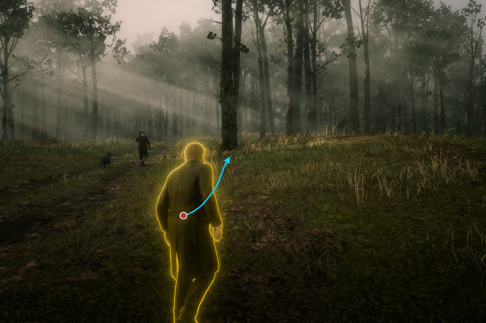
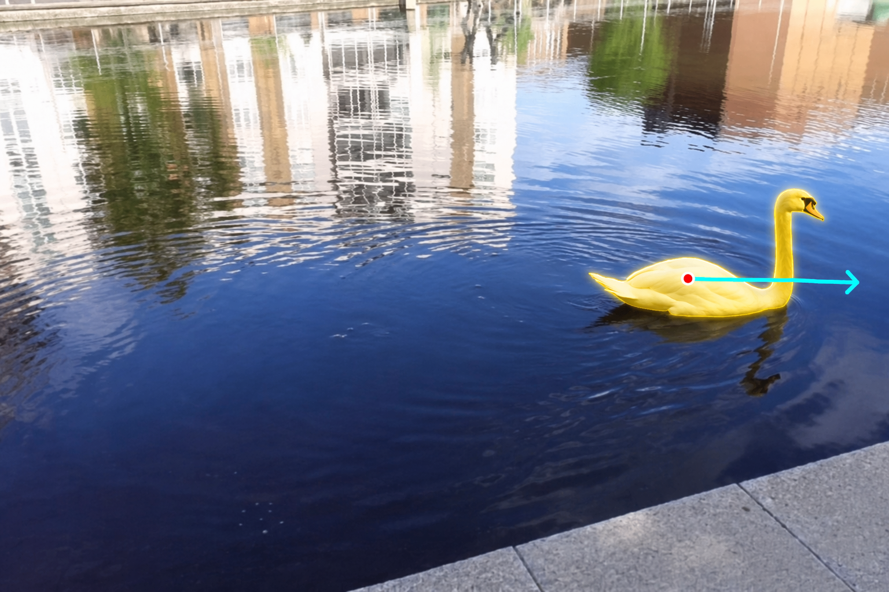

Method
Normalized World Trajectory
Lifts user-drawn 2D paths into a camera-invariant world-space coordinate system and dynamically re-projects them under the current camera pose, decoupling object motion from ego-motion.
Spatial-Pathway LoRA
Adapts only the spatial-control pathway (ProPE + action encoder) with lightweight LoRA, adding object manipulation without overwriting the pretrained camera controller.
Trajectory-Anchored State Persistence
Uses the world-space trajectory as a persistent spatial state signal and refreshes stale memories, so moved objects reappear at correct positions when the camera returns.

| Method | Camera | Object Traj. | Composable | Off-Cam State | Autoregressive |
|---|---|---|---|---|---|
| DragAnything | × | ✓ | × | × | × |
| Wan-Move | × | ✓ | × | × | × |
| GameCraft | ✓ | × | × | × | ✓ |
| Genie 3 | ✓ | × | × | × | ✓ |
| WorldPlay | ✓ | × | × | × | ✓ |
| WorldCraft (Ours) | ✓ | ✓ | ✓ | ✓ | ✓ |
Trajectory Control Comparison
Side-by-side comparison on static-camera trajectory control. All methods receive the same first frame and trajectory condition. WorldCraft achieves precise object-level control while maintaining temporal consistency.

Long-Horizon & Off-Camera
The goose moves right while the camera pans left and then returns. WorldCraft maintains scene consistency and, via TASP, recovers the object at its correct off-camera-updated position. Baselines either lose scene coherence or cannot track object state.

Extended Capabilities
Quantitative Results
| Method | Visual Quality | VBench++ | TE↓ | |||||
|---|---|---|---|---|---|---|---|---|
| PSNR↑ | SSIM↑ | LPIPS↓ | DINO↑ | SubjC↑ | BgC↑ | Temp↑ | ||
| DragAnything | 15.97 | 0.600 | 0.468 | 0.777 | 0.896 | 0.913 | 0.938 | 39.86 |
| Wan-Move | 16.42 | 0.592 | 0.375 | 0.782 | 0.927 | 0.943 | 0.985 | 44.08 |
| WorldCraft (Ours) | 17.23 | 0.616 | 0.363 | 0.807 | 0.942 | 0.945 | 0.989 | 38.90 |
| Method | Short-term (61 frames) | Long-term (253 frames) | |||||||
|---|---|---|---|---|---|---|---|---|---|
| RPErot↓ | RPEtrans↓ | RPEcam↓ | PSNR↑ | SSIM↑ | LPIPS↓ | RPErot↓ | RPEtrans↓ | RPEcam↓ | |
| Yume | 0.261 | 0.0143 | 0.0169 | 12.39 | 0.2931 | 0.5718 | 0.374 | 0.0247 | 0.0285 |
| Matrix-Game 2.0 | 0.342 | 0.0137 | 0.0196 | 12.96 | 0.3235 | 0.5326 | 0.162 | 0.0243 | 0.0261 |
| GameCraft | 0.252 | 0.0130 | 0.0157 | 12.42 | 0.2861 | 0.5529 | 0.198 | 0.0243 | 0.0265 |
| WorldPlay (base) | 0.120 | 0.0155 | 0.0165 | 13.77 | 0.3434 | 0.4700 | 0.130 | 0.0262 | 0.0276 |
| WorldCraft (Ours) | 0.131 | 0.0161 | 0.0170 | 13.95 | 0.3474 | 0.4621 | 0.123 | 0.0225 | 0.0233 |
| Configuration | #Params | TE↓ | RPErot↓ |
|---|---|---|---|
| (a) NWT Representation | |||
| Pixel space (raw user traj.) | — | 35.82 / 40.69 / 45.28 | — |
| World space + single-shot depth | — | 33.82 / 37.69 / 41.28 | — |
| World space + iterative depth | — | 30.82 / 32.10 / 34.65 | — |
| (b) Layer Selection (Static-BI → Dynamic-AR) | |||
| Spatial-pathway LoRA (ProPE + action) | ~50M | 38.90 | 0.131 |
| Spatial pathway + V + MLP (blocks 28-42) | ~120M | 46.60 | 0.136 |
| Q/K/V + MLP (conventional LoRA) | ~200M | 49.43 | 0.139 |
| Full fine-tune | 8B | 37.20 | 0.237 |
Citation
@inproceedings{gu2026worldcraft,
title={WorldCraft: From Camera Navigation to Object Manipulation
in Interactive Video World Models},
author={Gu, Bohai and others},
booktitle={Advances in Neural Information Processing Systems (NeurIPS)},
year={2026}
}